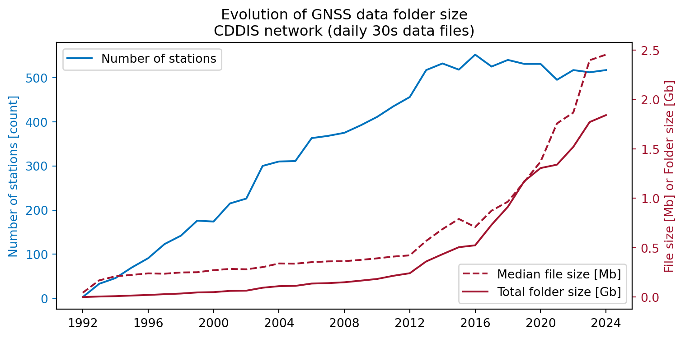

On the exploding size of GNSS measurement data files
The rapid growth of GNSS receiver networks, coupled with the proliferation of constellations and signals, has led to an exponential increase in data volume. This post uses the GNSS data repository of the CDDIS GNSS receiver network to illustrate this trend.
GNSS
English
Published
October 29, 2024
For those of you who work with GNSS data processing, have you ever wondered how much data do servers such as CDDIS or EUREF, who store historic GNSS raw measurement data, need to handle?
If your use case is to perform a positioning session for a single receiver maybe not, but I bet the situation is different if you are building GNSS products (e.g. estimation of GNSS satellite orbits and clocks, ionospheric monitoring, …), where a worldwide distribution of receivers (and data) is not only desirable but mandatory.
In order to answer this question, I have implemented a script that lists the files stored in the GNSS raw measurement data folders provided CDDIS server. In particular, I selected the daily files with 30 seconds sampling rate. In order not to overwhelm the servers, just one day for each year (January 1st) was processed. Then, the code included below in this post has been used to plot the number of (unique) stations1 as well as the median file size. The total folder size has been also computed.
Initially, one may think that the volume increase could be due to two factors:
Increased number of stations
Increase of file size due to new constellations and new signals
Code
import datetimeimport globimport numpy as npimport pandas as pdimport matplotlib.pyplot as pltfiles = glob.glob('./data/folder_*.txt')# List of all dataframesdfs = []# load the data filesfor f in files: date = datetime.datetime.strptime(f, './data/folder_%Y_%j.txt') data = pd.read_csv(f, delimiter="\s+", names=['file', 'size']) data['date'] = date data['station'] = data['file'].str[:4].str.lower() dfs.append(data)# Aggregate all dataframesdf = pd.concat(dfs)stats = df.groupby('date').agg( n_stations=('station', lambda x: x.nunique()), median_size=('size', 'median'), total_size=('size', 'sum'))fig, ax1 = plt.subplots(figsize=(8, 4))# colorsblue ='#0072bd'red ='#a2142f'plt.title("Evolution of GNSS data folder size\nCDDIS network (daily 30s data files)")ax1.plot(stats.index, stats['n_stations'], label="Number of stations", c=blue)ax2 = ax1.twinx()ax2.plot(stats.index, stats['median_size'] /1.0e6, label="Median file size [Mb]", linestyle='--', c= red)ax2.plot(stats.index, stats['total_size'] /1.0e9, label="Total folder size [Gb]", c= red)ax1.set_ylabel('Number of stations [count]', color=blue)ax2.set_ylabel('File size [Mb] or Folder size [Gb]', color=red)ax1.tick_params(axis='y', colors=blue)ax2.tick_params(axis='y', colors=red)ax1.legend(loc='upper left')ax2.legend(loc='lower right')plt.tight_layout()plt.show()

GNSS data volume over years for CDDIS network
But looking at the figure is clear that the main driving factor for the volume size increase is the larger file size: note that from 2012 the number of stations has stabilized and yet the total size has suffered a large increase (following the trend of the file size). Note also that most of the folders contain duplicated data: data from the same station might be stored in both RINEX v2 and v3 (althought this may change in the future, as V2 support is winding down).
In order to illustrate the causes of the file size increase, let’s take a particular station (EBRE, Observatori de l’Ebre, Spain) as an example. All files studied are compressed using Hatanaka and binary zip. The constellations and bands tracked in 4 particular files in the past are summarized in the following table:
2008-01-01
2012-01-01
2016-01-01
2018-01-01
Filename
ebre0010.08d
ebre0010.12d
EBRE00ESP_R_20160010000_01D_30S_MO.rnx
EBRE00ESP_R_20180010000_01D_30S_MO
Constellations
GPS
GPS
GPS+GLO+GAL+BDS
GPS+GLO+GAL+BDS
Number of bands
2
2
6
6 (incl. Doppler observables)
Rinex version
2.11
2.11
3.02
3.02
It is clear then that the qualitative jump between 2012 to 2016 is caused by the recording of additional constellations (most notably Galileo and Beidou, which have associated many more signals). Additional increase in the file size is the inclusion of Doppler observables (in the case of EBRE sometime between 2016 and 2018).
Conclusions
Based on the analyzed data, several key observations emerge:
Data Volume: For the CDDIS network, the daily data volume currently hovers around 2.5 GB, translating to approximately 1 TB/year. This figure excludes high-rate datasets recorded at 1-second intervals, which significantly increase the overall volume (at least by a factor of 30).
Station Count: The number of stations within the CDDIS network has remained relatively stable at around 500 since 2014, which discards this parameter as the main cause for the volume increase.
File size: is the actual responsible of the overall folder size increase (rather than the station count). A notable surge in file and folder sizes started occuring in 2016, primarily due to the introduction of new constellations, associated signals, and the inclusion of additional observables such as e.g. Doppler observables.
The substantial increase in data volume poses challenges beyond mere storage considerations. The RINEX format, while human-readable, is not optimized for machine processing, potentially hindering applications that require the analysis of large datasets (Big data, AI/ML, …). To address this limitation, alternative binary (machine-friendly) formats should be considered as a complementary solution to enhance processing efficiency: a preliminary analysis show that while loading (parsing) a RINEX format in Python may take several tens of seconds (for a 5h 1-second interval RINEX V3 file), the same file stored in Apache Parquet takes little more than a second to load.
Acknowledgements
Thanks to NASA (and CDDIS) to provide the data used to elaborate this blog post.
Use of AI
Artificial Intelligence has been used to polish some text styling and correct some typos. Ideation and data processing has been done by the author.
Footnotes
The same folder may contain data for the same receiver with different formats (e.g. RINEX v2 and RINEX v3), the script below makes sure only unique stations are computed.↩︎